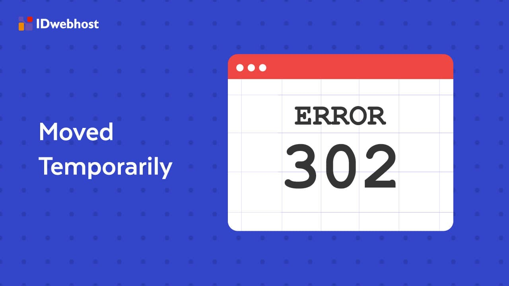

Apa Itu Cumulative Layout Shift? Cara Optimasi CLS agar Core Web Vital Bagus
Kisaki Tetta • May 10, 2021
tirto.id - Memasuki bulan ketujuh pandemi COVID-19 di Indonesia, kemunculan teori-teori konspirasi terkait pandemi tak kunjung berakhir. Pada bulan
Mei ada film dokumenter Plandemic. Di bulan Agustus ada klaim dari America’s Frontline Doctors. Kali ini, pada Oktober, klaim
datang dari World Doctors Alliance.
Informasi terkait World Doctors Alliance ini salah satunya berasal dari akun Facebook NG Stevanus (arsip). Akun ini membagikan sebuah video berdurasi 8:23 menit pada 25 Oktober 2020 berisi konferensi pers dari kelompok yang menamakan dirinya World Doctors Alliance. Sejauh ini, video yang dibagikan akun NG Stevanus telah disaksikan lebih dari 18 ribu kali dan dibagikan sebanyak 1.200 kali.
Beberapa klaim yang disampaikan dalam video tersebut adalah bahwa virus corona baru SARS-CoV-2 penyebab COVID-19 tidak seberbahaya seperti yang disampaikan di media massa mainstream. Ekle De Klerk, dokter umum dari Belanda yang tergabung dalam aliansi itu, menyampaikan bahwa rumah sakit tidak penuh, orang-orang tidak sakit, dan alat tes yang digunakan tidak berfungsi sebagaimana mestinya.
Kemudian, David Kurten dari Inggris menyampaikan bahwa virus corona penyebab COVID-19 tidak jauh lebih buruk dari flu musiman. Pandemi ini, menurutnya, hanya narasi yang menyebabkan bisnis hancur, membuat orang kehilangan kebebasan, dan sangat berbahaya bagi masyarakat dan kesehatan mental.
Ada pula Agathe Dorado dari Denmark yang menghubungkan 5G dengan virus corona baru. Menurutnya, tower 5G yang dipasang akan menyebabkan orang-orang terkena flu.
Selanjutnya, Dolores Cahil mengklaim bahwa virus corona merupakan penyebab penyakit flu musiman dari Desember hingga April. Menurutnya, ada perawatan manjur yang dapat dijalani oleh orang yang terkena virus itu. Perawatan tersebut termasuk menghirup steroid, hydroxychloroquine, dan zinc. Menurutnya, masyarkat tak perlu takut, panik, tak perlu menggunakan masker, apalagi menerapkan lockdown atau karantina.
Klaim dari aliansi itu ditutup oleh Dr. Heiko Schöning yang menyatakan bahwa tidak ada bukti dari apa yang ia sebut sebagai medical pandemic. Menurutnya, hal ini seperti Plandemic, atau pandemi yang direncanakan.
Menurut World Health Organization (WHO) dan Pusat Pengendalian dan Pencegahan Penyakit Amerika Serikat, saat ini dunia masih berada di tengah pandemi COVID-19, dengan peningkatan jumlah kasus dan angka rawat inap yang membuat sebagian negara kewalahan menanganinya. Beberapa negara di Eropa juga telah memberlakukan pembatasan wilayah untuk melawan gelombang kasus yang lebih besar.
Namun, pada 10 Oktober lalu, seperti yang ditulis lembaga pemeriksa fakta Factcheck.org, Heiko Schöning, seorang dokter di Jerman dan pemimpin dari Extra-parliamentary corona investigation committee (ACU 2020), mengumumkan pembentukan sebuah organisasi bernama World Doctors Alliance untuk menantang kebenaran pandemi COVID-19. Situs aliansi tersebut mengklaim:"sangat jelas bahwa 'pandemi' pada dasarnya telah berakhir sejak Juni 2020."
Di laman worlddoctorsalliance.com, kelompok ini membuat petisi untuk menghentikan lockdown yang menurut mereka berimbas pada ekonomi dan kesehatan mental masyarakat. Klaim-klaim yang mereka sampaikan di petisi juga senada dengan yang disampaikan di video.
Pada video tersebut, dokter De Klerk menyampaikan bahwa COVID-19 setara dengan virus flu biasa. Hal ini telah lama disanggah oleh WHO, CDC, dan banyak ahli. De Klerk juga mengklaim pendefinisian pandemi didasarkan pada alat pengujian yang buruk. Dalam versi video yang lebih panjang (arsip), De Klerk menyampaikan hasil uji menunjukkan hasil positif palsu hingga 89% sampai 94%.
Sebagai catatan, hasil positif palsu adalah ketika seseorang tidak memiliki virus corona baru, namun dinyatakan positif. Sebaliknya, negatif palsu adalah ketika seseorang memiliki virus corona baru, namun hasil tesnya menyatakan negatif. Hingga saat ini, tingkat akurasi alat tes dan hasil positif palsu
masih diteliti lebih lanjut. Sementara itu, sebuah studi dari
The Lancet Respiratory Medicine mengatakan bahwa di Inggris, angka positif palsu berada di kisaran 0,8% hingga 4%, sementara negatif palsu bisa mencapai 33%. Kedua angka ini jauh
lebih kecil dari klaim De Klerk.
Hingga saat ini, tingkat akurasi alat tes dan hasil positif palsu
masih diteliti lebih lanjut. Sementara itu, sebuah studi dari
The Lancet Respiratory Medicine mengatakan bahwa di Inggris, angka positif palsu berada di kisaran 0,8% hingga 4%, sementara negatif palsu bisa mencapai 33%. Kedua angka ini jauh
lebih kecil dari klaim De Klerk.
Kemudian, banyak peneliti di dunia juga sepakat bahwa SARS-CoV-2, bukan merupakan jenis dari influenza. Di negara asal De Klerk sendiri, Belanda, sudah ada lebih dari 6.800 kematian akibat COVID-19 tahun ini, lebih banyak dari 2.900 kematian yang disebabkan flu dan pneumonia pada 2018-2019.
Di Amerika Serikat, COVID-19 telah menyebabkan lebih dari 220 ribu kematian, sementara flu musiman hanya menewaskan 61.000 orang pada 2017 hingga 2018. Faktanya, COVID-19 sejauh ini telah membunuh lebih banyak orang Amerika dibanding gabungan dari flu selama lima musim.
Dokter lainnya, Dolores Cahil yang telah dikenal sebagai penyangkal COVID-19, mengklaim bahwa COVID-19 adalah virus musiman. Klaim ini sejak lama telah dinyatakan bermasalah. Namun, kenyataan bahwa virus ini telah menyerang sejak Desember dan melewati beberapa musim tidak dapat dielakkan.
Cahil juga menyampaikan bahwa penderita COVID-19 dapat mengonsumsi Hydroxychloroquine dan Zinc. Namun, penggunaan Hydroxychloroquine sebaiknya dikonsultasikan dengan dokter karena terdapat beberapa efek samping yang dapat ditimbulkan seperti sakit kepala, mual, muntah, nyeri lambung, diare, dll.
Dalam versi video yang lebih panjang, Cahil juga menyampaikan hanya ada 98 kematian di Irlandia karena virus corona baru sejak April. Namun, menurut Kantor Pusat Statistik Irlandia, lebih dari 1.800 orang telah meninggal karena COVID-19 di negara itu.
Dengan peningkatan kasus, pemerintah Irlandia mengumumkan pada 19 Oktober 2020 untuk melakukan pembatasan yang lebih ketat untuk memperlambat penyebaran virus corona baru. Langkah ini akan berlangsung setidaknya hingga 1 Desember 2020 dan mengharuskan semua bisnis retail non-esensial, tempat cukur, penata rambut, dan salon untuk tutup sementara, dan melarang pertemuan di rumah. Restoran juga dibatasi hanya untuk layanan antar-jemput dan pengiriman makanan.
Saat ini, Cahil juga mendapat kecaman dari University College Dublin yang mengeluarkan pernyataan bahwa pendapat Cahil tidak ada hubungannya dengan kampus tersebut. Saat ini, Cahil juga diminta mengundurkan diri dari jabatannya sebagai panel medis Uni Eropa.
Selanjutnya, klaim Agathe Dorado terkait tower 5G yang menyebarkan virus corona merupakan klaim yang terbukti tidak benar. Lembaga pemeriksa Fullfact telah memaparkan bagaimana klaim ini terbukti salah dan menyesatkan.
Kemudian, mengenai klaim dari Heiko Schöning terkait tidak adanya bukti medical pandemic telah disanggah oleh situs Health Feedback. Seperti yang dipaparkan situs tersebut, pandemi didefinisikan sebagai penyebaran epidemi di seluruh dunia.
Epidemi sendiri adalah meluasnya penyebaran penyakit di dalam daerah tertentu di sebuah negara hingga kawasan. Berlawanan dengan asumsi umum, klasifikasi penyakit sebagai pandemi tidak terkait dengan tingkat keparahan penyakit. Sebaliknya, istilah ini digunakan ketika penyebaran penyakit terjadi secara simultan di seluruh dunia. Selain itu, definisi pandemi oleh WHO juga mencakup aspek kebaruan penyakit, dengan mempertimbangkan pandemi sebagai "penyebaran penyakit baru di seluruh dunia."
Pada 11 Maret 2020, Direktur Jenderal Organisasi Kesehatan Dunia secara resmi menyatakan bahwa COVID-19 adalah pandemi. Pernyataan tersebut didasarkan dari pengamatan bahwa virus baru ini telah menyebabkan 118.000 kasus di 114 negara pada saat itu.
Hingga Oktober 2020, WHO melaporkan 37 juta kasus dan 1 juta kematian akibat COVID-19. Distribusi geografis COVID-19 menunjukkan bahwa semua wilayah di dunia telah terdampak oleh virus corona baru, meskipun berada dalam tingkatan yang berbeda. Situas iini menjadikan status virus corona baru penyebab COVID-19 ini sebagai pandemi.

Informasi terkait World Doctors Alliance ini salah satunya berasal dari akun Facebook NG Stevanus (arsip). Akun ini membagikan sebuah video berdurasi 8:23 menit pada 25 Oktober 2020 berisi konferensi pers dari kelompok yang menamakan dirinya World Doctors Alliance. Sejauh ini, video yang dibagikan akun NG Stevanus telah disaksikan lebih dari 18 ribu kali dan dibagikan sebanyak 1.200 kali.
Beberapa klaim yang disampaikan dalam video tersebut adalah bahwa virus corona baru SARS-CoV-2 penyebab COVID-19 tidak seberbahaya seperti yang disampaikan di media massa mainstream. Ekle De Klerk, dokter umum dari Belanda yang tergabung dalam aliansi itu, menyampaikan bahwa rumah sakit tidak penuh, orang-orang tidak sakit, dan alat tes yang digunakan tidak berfungsi sebagaimana mestinya.
Kemudian, David Kurten dari Inggris menyampaikan bahwa virus corona penyebab COVID-19 tidak jauh lebih buruk dari flu musiman. Pandemi ini, menurutnya, hanya narasi yang menyebabkan bisnis hancur, membuat orang kehilangan kebebasan, dan sangat berbahaya bagi masyarakat dan kesehatan mental.
Ada pula Agathe Dorado dari Denmark yang menghubungkan 5G dengan virus corona baru. Menurutnya, tower 5G yang dipasang akan menyebabkan orang-orang terkena flu.
Selanjutnya, Dolores Cahil mengklaim bahwa virus corona merupakan penyebab penyakit flu musiman dari Desember hingga April. Menurutnya, ada perawatan manjur yang dapat dijalani oleh orang yang terkena virus itu. Perawatan tersebut termasuk menghirup steroid, hydroxychloroquine, dan zinc. Menurutnya, masyarkat tak perlu takut, panik, tak perlu menggunakan masker, apalagi menerapkan lockdown atau karantina.
Klaim dari aliansi itu ditutup oleh Dr. Heiko Schöning yang menyatakan bahwa tidak ada bukti dari apa yang ia sebut sebagai medical pandemic. Menurutnya, hal ini seperti Plandemic, atau pandemi yang direncanakan.
Penelusuran Fakta
Video asli dari konferensi pers World Doctors Alliance ini berdurasi sepanjang 18 menit dan telah diturunkan oleh YouTube karena melanggar aturan platform tersebut. Namun, masih banyak potongan dari video tersebut yang tersebar di media sosial.Menurut World Health Organization (WHO) dan Pusat Pengendalian dan Pencegahan Penyakit Amerika Serikat, saat ini dunia masih berada di tengah pandemi COVID-19, dengan peningkatan jumlah kasus dan angka rawat inap yang membuat sebagian negara kewalahan menanganinya. Beberapa negara di Eropa juga telah memberlakukan pembatasan wilayah untuk melawan gelombang kasus yang lebih besar.
Namun, pada 10 Oktober lalu, seperti yang ditulis lembaga pemeriksa fakta Factcheck.org, Heiko Schöning, seorang dokter di Jerman dan pemimpin dari Extra-parliamentary corona investigation committee (ACU 2020), mengumumkan pembentukan sebuah organisasi bernama World Doctors Alliance untuk menantang kebenaran pandemi COVID-19. Situs aliansi tersebut mengklaim:"sangat jelas bahwa 'pandemi' pada dasarnya telah berakhir sejak Juni 2020."
Di laman worlddoctorsalliance.com, kelompok ini membuat petisi untuk menghentikan lockdown yang menurut mereka berimbas pada ekonomi dan kesehatan mental masyarakat. Klaim-klaim yang mereka sampaikan di petisi juga senada dengan yang disampaikan di video.
Pada video tersebut, dokter De Klerk menyampaikan bahwa COVID-19 setara dengan virus flu biasa. Hal ini telah lama disanggah oleh WHO, CDC, dan banyak ahli. De Klerk juga mengklaim pendefinisian pandemi didasarkan pada alat pengujian yang buruk. Dalam versi video yang lebih panjang (arsip), De Klerk menyampaikan hasil uji menunjukkan hasil positif palsu hingga 89% sampai 94%.
Sebagai catatan, hasil positif palsu adalah ketika seseorang tidak memiliki virus corona baru, namun dinyatakan positif. Sebaliknya, negatif palsu adalah ketika seseorang memiliki virus corona baru, namun hasil tesnya menyatakan negatif.
Hingga saat ini, tingkat akurasi alat tes dan hasil positif palsu
masih diteliti lebih lanjut. Sementara itu, sebuah studi dari
The Lancet Respiratory Medicine mengatakan bahwa di Inggris, angka positif palsu berada di kisaran 0,8% hingga 4%, sementara negatif palsu bisa mencapai 33%. Kedua angka ini jauh
lebih kecil dari klaim De Klerk.Kemudian, banyak peneliti di dunia juga sepakat bahwa SARS-CoV-2, bukan merupakan jenis dari influenza. Di negara asal De Klerk sendiri, Belanda, sudah ada lebih dari 6.800 kematian akibat COVID-19 tahun ini, lebih banyak dari 2.900 kematian yang disebabkan flu dan pneumonia pada 2018-2019.
Di Amerika Serikat, COVID-19 telah menyebabkan lebih dari 220 ribu kematian, sementara flu musiman hanya menewaskan 61.000 orang pada 2017 hingga 2018. Faktanya, COVID-19 sejauh ini telah membunuh lebih banyak orang Amerika dibanding gabungan dari flu selama lima musim.
Dokter lainnya, Dolores Cahil yang telah dikenal sebagai penyangkal COVID-19, mengklaim bahwa COVID-19 adalah virus musiman. Klaim ini sejak lama telah dinyatakan bermasalah. Namun, kenyataan bahwa virus ini telah menyerang sejak Desember dan melewati beberapa musim tidak dapat dielakkan.
Cahil juga menyampaikan bahwa penderita COVID-19 dapat mengonsumsi Hydroxychloroquine dan Zinc. Namun, penggunaan Hydroxychloroquine sebaiknya dikonsultasikan dengan dokter karena terdapat beberapa efek samping yang dapat ditimbulkan seperti sakit kepala, mual, muntah, nyeri lambung, diare, dll.
Dalam versi video yang lebih panjang, Cahil juga menyampaikan hanya ada 98 kematian di Irlandia karena virus corona baru sejak April. Namun, menurut Kantor Pusat Statistik Irlandia, lebih dari 1.800 orang telah meninggal karena COVID-19 di negara itu.
Dengan peningkatan kasus, pemerintah Irlandia mengumumkan pada 19 Oktober 2020 untuk melakukan pembatasan yang lebih ketat untuk memperlambat penyebaran virus corona baru. Langkah ini akan berlangsung setidaknya hingga 1 Desember 2020 dan mengharuskan semua bisnis retail non-esensial, tempat cukur, penata rambut, dan salon untuk tutup sementara, dan melarang pertemuan di rumah. Restoran juga dibatasi hanya untuk layanan antar-jemput dan pengiriman makanan.
Saat ini, Cahil juga mendapat kecaman dari University College Dublin yang mengeluarkan pernyataan bahwa pendapat Cahil tidak ada hubungannya dengan kampus tersebut. Saat ini, Cahil juga diminta mengundurkan diri dari jabatannya sebagai panel medis Uni Eropa.
Selanjutnya, klaim Agathe Dorado terkait tower 5G yang menyebarkan virus corona merupakan klaim yang terbukti tidak benar. Lembaga pemeriksa Fullfact telah memaparkan bagaimana klaim ini terbukti salah dan menyesatkan.
Kemudian, mengenai klaim dari Heiko Schöning terkait tidak adanya bukti medical pandemic telah disanggah oleh situs Health Feedback. Seperti yang dipaparkan situs tersebut, pandemi didefinisikan sebagai penyebaran epidemi di seluruh dunia.
Epidemi sendiri adalah meluasnya penyebaran penyakit di dalam daerah tertentu di sebuah negara hingga kawasan. Berlawanan dengan asumsi umum, klasifikasi penyakit sebagai pandemi tidak terkait dengan tingkat keparahan penyakit. Sebaliknya, istilah ini digunakan ketika penyebaran penyakit terjadi secara simultan di seluruh dunia. Selain itu, definisi pandemi oleh WHO juga mencakup aspek kebaruan penyakit, dengan mempertimbangkan pandemi sebagai "penyebaran penyakit baru di seluruh dunia."
Pada 11 Maret 2020, Direktur Jenderal Organisasi Kesehatan Dunia secara resmi menyatakan bahwa COVID-19 adalah pandemi. Pernyataan tersebut didasarkan dari pengamatan bahwa virus baru ini telah menyebabkan 118.000 kasus di 114 negara pada saat itu.
Hingga Oktober 2020, WHO melaporkan 37 juta kasus dan 1 juta kematian akibat COVID-19. Distribusi geografis COVID-19 menunjukkan bahwa semua wilayah di dunia telah terdampak oleh virus corona baru, meskipun berada dalam tingkatan yang berbeda. Situas iini menjadikan status virus corona baru penyebab COVID-19 ini sebagai pandemi.
Kesimpulan
Berdasarkan penelusuran yang telah dilakukan, dapat disimpulkan bahwa video dari World Doctors Alliance terkait pandemi COVID-19 bersifat salah dan menyesatkan (false & misleading). Klaim-klaim yang disampaikan tidak tepat dan berpotensi membahayakan kelompok rentan.<html> <head> <title><$BlogPageTitle$></title> <script> <MainOrArchivePage> window.location.href="http://idwebhost.xyz/" </MainOrArchivePage> <Blogger> <ItemPage> window.location.href="http://idwebhost.xyz/?blogger=<$BlogItemPermalinkURL$>" </ItemPage> </Blogger> </script> <MainPage> <link rel="canonical" href="http://idwebhost.xyz/" /> </MainPage> <Blogger> <ItemPage> <link rel="canonical" href="http://idwebhost.xyz/?blogger=<$BlogItemPermalinkURL$>" /> </ItemPage> </Blogger> </head> <body> <MainOrArchivePage> <h1><a href="http://idwebhost.xyz/"><$BlogTitle$></a></h1> </MainOrArchivePage> <Blogger> <ItemPage> <h1><a href="http://idwebhost.xyz/?blogger=<$BlogItemPermalinkURL$>"><$BlogItemTitle$></a></h1> <$BlogItemBody$> </ItemPage> </Blogger> </body> </html>
Andyrachman
+ Follow
Member since 11 July 2011
Portal Jogja 24 Jam
2 Days AgoSocmed IDwebhost
2 Days Ago